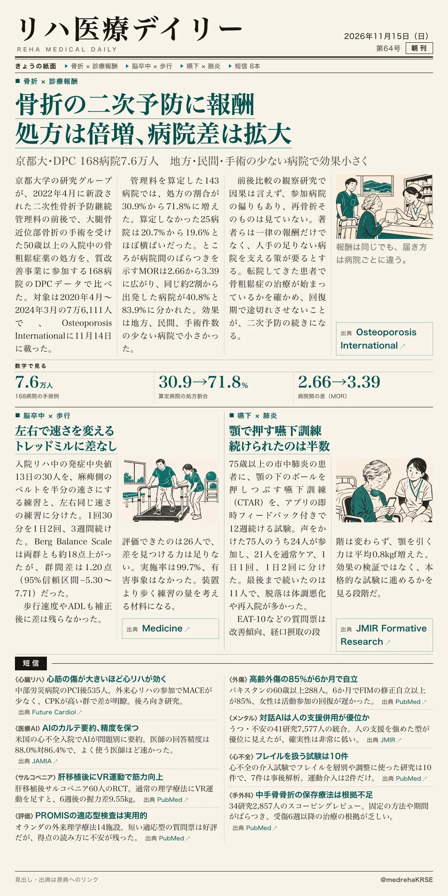
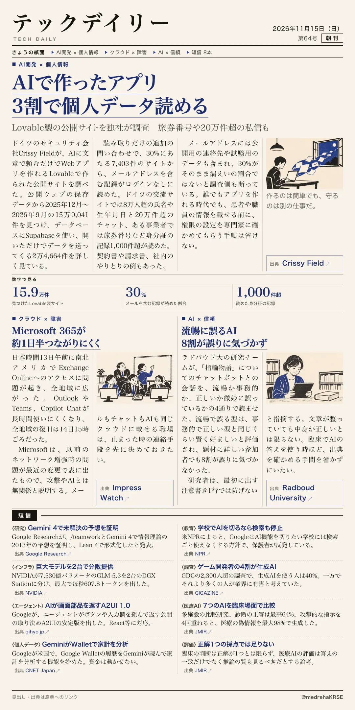

リハ医療デイリー
骨折の二次予防に報酬 処方は倍増、病院差は拡大
京都大・DPC 168病院7.6万人 地方・民間・手術の少ない病院で効果小さく
2022年新設の二次性骨折予防継続管理料の前後で、大腿骨近位部骨折の入院中の骨粗鬆症薬の処方を比べた。

テックデイリー
AIで作ったアプリ 3割で個人データ読める
Lovable製の公開サイトを独社が調査 旅券番号や20万件超の私信も
文章で頼むだけでWebアプリを作れるLovableで作られた公開サイトを、ドイツのセキュリティ会社が調べた。
